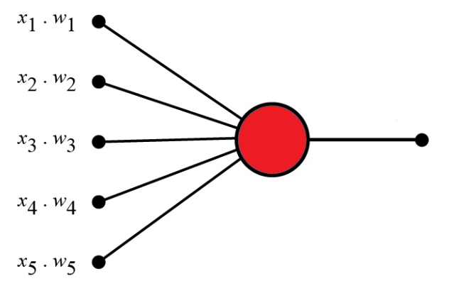
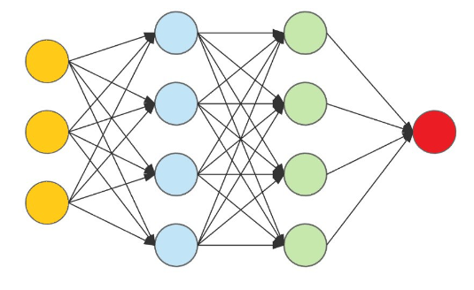

A Perceptron is an Artificial Neuron
It is the simplest possible Neural Network
Neural Networks are the building blocks of Machine Learning.
Frank Rosenblatt was an American psychologist notable in the field of Artificial Intelligence. In 1957 he started something really big. He "invented" a Perceptron program, on an IBM 704 computer at Cornell Aeronautical Laboratory. Scientists had discovered that brain cells (Neurons) receive input from our senses by electrical signals. The Neurons, then again, use electrical signals to store information, and to make decisions based on previous input. Frank had the idea that Perceptrons could simulate brain principles, with the ability to learn and make decisions.
Imagine a perceptron (in your brain).
The perceptron tries to decide if you should go to a concert.
Is the artist good? Is the weather good?
What weights should these facts have?
Frank Rosenblatt suggested this algorithm:
1. Seet a threshold value:
2. Multiply all inputs with its weights:
3. Sum all the results
4. Activate the Output:
If the weather weight is 0.6 for you, it might be different for someone else. A higher weight means that the weather is more important to them.
If the threshold value is 1.5 for you, it might be different for someone else. A lower threshold means they are more wanting to go to any concert.
Perceptron inputs are called nodes. The nodes have both a value and a weight.
Each input node has a binary value of 1 or 0.
This can be interpreted as true or false / yes or no.
In the example above, the node values are: 1, 0, 1, 0, 1
Weights shows the strength of each node. In the example above, the node weights are: 0.7, 0.6, 0.5, 0.3, 0.4
The activation function maps the the weighted sum into a binary value of 1 or 0.
This can be interpreted as true or false / yes or no.
In the example above, the activation function is simple: (sum > 1.5)
It is obvious that a decision is NOT made by one neuron alone.
Many other neurons must provide input:
Multi-Layer Perceptrons can be used for very sophisticated decision making.
the Perception defines the first step into Neural Networks:
